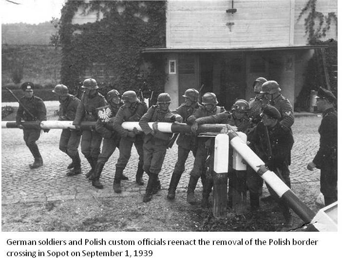

Europe at War
 In August 1939 German Foreign Minister Joachim von Ribbentrop engineered a Non-Aggression Pact with the Soviet Union's Josef Stalin, clearing the way for German invasion of Poland. Minister of Propaganda Joseph Goebbels mounted a virulent, lengthy anti-Polish propaganda campaign, full of degrading anti-Polish ethnic rhetoric, and the SS concocted a phony incident along the German-Polish border. On September 1, 1939, the German Wehrmacht rolled across the Polish border and demonstrated to the world for the first time the tactics that would become known as Blitzkrieg. World War II in Europe had begun.
In August 1939 German Foreign Minister Joachim von Ribbentrop engineered a Non-Aggression Pact with the Soviet Union's Josef Stalin, clearing the way for German invasion of Poland. Minister of Propaganda Joseph Goebbels mounted a virulent, lengthy anti-Polish propaganda campaign, full of degrading anti-Polish ethnic rhetoric, and the SS concocted a phony incident along the German-Polish border. On September 1, 1939, the German Wehrmacht rolled across the Polish border and demonstrated to the world for the first time the tactics that would become known as Blitzkrieg. World War II in Europe had begun.
On September 3 France and Great Britain declared war on Germany, but the campaign in Poland was over in a matter of weeks, long before France or Great Britain were capable of any kind of military action. While the Russians were taking advantage of their pact with Hitler to invade Finland, which held out until March 1940, the rest of the war came to a halt. During the winter of 1939–40 the war was called a phony war or "Sitzkrieg," as nothing of any significance happened aside from the SS beginning its ethnic cleansing of Warsaw and the rest of Poland.
British Prime Minister Neville Chaimberlain announces the beginning of World War II


In the spring of 1940 Hitler invaded Denmark, Norway, and Netherlands. Then his army rolled through Belgium and flanked the French Maginot Line, a defensive wall built at the cost of millions of francs per mile, and France capitulated in six weeks. Hitler accepted the French surrender in the very same spot on which Germany had surrendered in 1918, after which he did a gleeful little jig, reveling in his moment of revenge. While Germany was attacking France, Italy declared war on France, causing President Roosevelt to claim, "On this tenth day of June, 1940, the hand that held the dagger has struck it into the back of its neighbor."